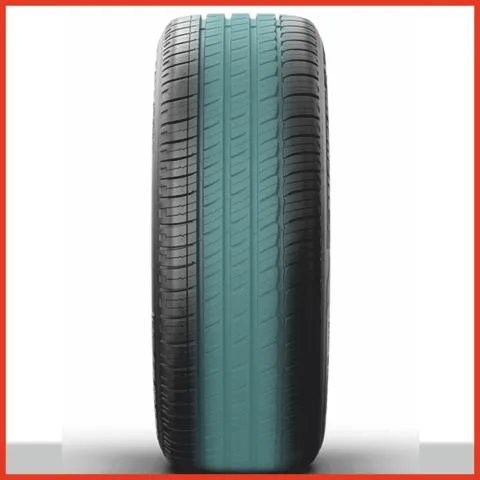
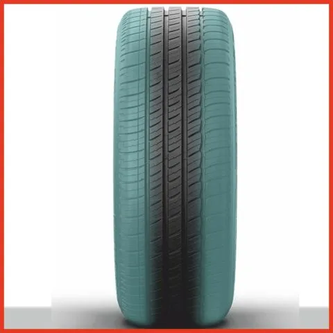
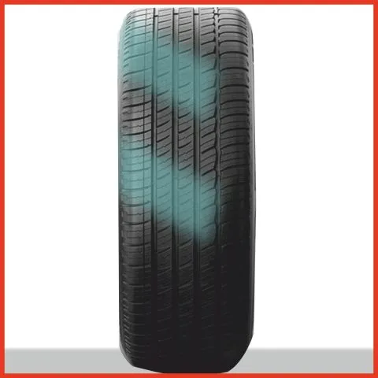
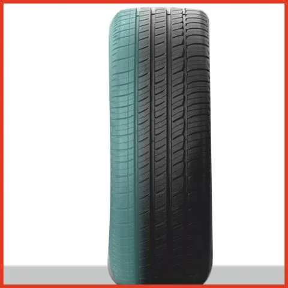
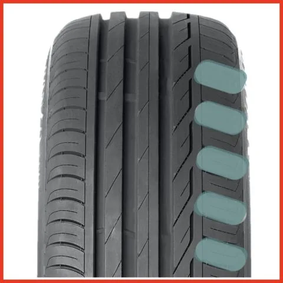

Neumáticos al límite: Cómo identificar el desgaste antes de que sea tarde
Publicado el
El desgaste de los cauchos es un problema común que afecta la seguridad y el rendimiento de los vehículos. En Corcauchos, en la Av. Lara desde 2006, sabemos que mantenerlos en buen estado no solo prolonga su vida útil, sino que también optimiza la conducción y reduce costos a largo plazo. En este artículo, exploraremos las principales causas del desgaste y cómo prevenirlo.
Tipos de desgaste en los cauchos: ¿Cómo identificarlos y prevenirlos?
DESGASTE CENTRAL

Este tipo de desgaste ocurre cuando la parte central del caucho se desgasta más rápido que los bordes.
- Causa principal: Inflado excesivo, lo que reduce el área de contacto con la carretera y concentra el desgaste en el centro.
- Cómo prevenirlo: Mantén la presión adecuada según las especificaciones del fabricante.
DESGASTE EN LOS BORDES

Si los laterales del caucho presentan un desgaste más pronunciado que la parte central, es una señal de presión insuficiente.
- Causa principal: Inflado insuficiente, lo que provoca una mayor fricción en los bordes.
- Cómo prevenirlo: Revisa y ajusta la presión de los cauchos regularmente.
DESGASTE IRREGULAR

Cuando el desgaste no es uniforme en todo el caucho, puede deberse a problemas mecánicos del vehículo.
- Causa principal: Alineación o balanceo deficientes, suspensión desgastada o piezas en mal estado.
- Cómo prevenirlo: Realiza alineaciones y balanceo periódicos, y revisa el estado de la suspensión.
DESGASTE DE UN SOLO LADO

Si el caucho está más gastado en un lado que en el otro, es probable que el vehículo tenga problemas de alineación.
- Causa principal: Mala alineación, lo que genera una distribución desigual de la carga sobre el caucho.
- Cómo prevenirlo: Programa revisiones periódicas para corregir la alineación.
DESGASTE EN FORMA DE “DIENTE DE SIERRA”

Este desgaste se caracteriza por un patrón irregular en el borde del caucho, similar a los dientes de una sierra.
- Causa principal: Problemas en la suspensión o desbalanceo en las ruedas.
- Cómo prevenirlo: Mantén el sistema de suspensión en buen estado y balancea los cauchos regularmente
Consejos Generales para Prevenir el Desgaste
- Mantener la presión adecuada según el fabricante.
- Rotar los cauchos cada 8,000-10,000 km para equilibrar el desgaste.
- Realizar inspecciones visuales periódicas y corregir cualquier anomalía a tiempo.
- Conducir con prudencia y evitar frenazos bruscos.
CORCAUCHOS: El Aliado de Tus Cauchos en Barquisimeto
En CORCAUCHOS, estamos comprometidos con la seguridad y el rendimiento de tu vehículo. Visítanos en Barquisimeto y encuentra los cauchos ideales para tu automóvil, además de recibir asesoría personalizada sobre su mantenimiento. Recuerda que unos cauchos en buen estado no solo mejoran el rendimiento del vehículo, sino que también garantizan tu seguridad en la carretera.
Si notas alguno de estos desgastes, escríbenos y revisamos tus cauchos.

¿Necesitas este servicio en Barquisimeto? Escríbenos y te atendemos.
Escríbenos por WhatsApp